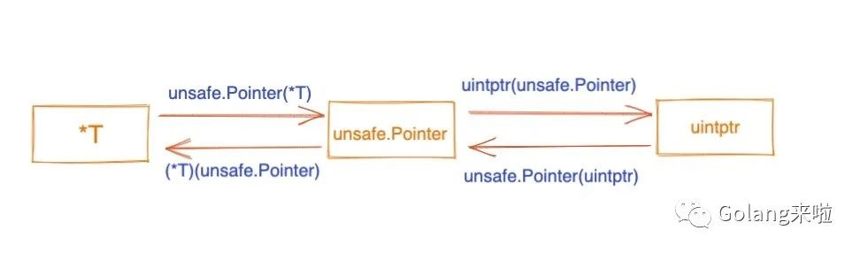

Go 汇编相关
常用指令，肝了一上午golang之plan9入门
//数据copy
LEAQ 5(AX*2), BX // BX=AX*2+5
MOVQ $123, AX // AX=123
MOVQ $0x123, AX // AX=291
MOVB $1, DI // 1 byte
MOVW $0x10, BX // 2 bytes
MOVD $1, DX // 4 bytes
MOVL $1, DX // 4 bytes
MOVQ $-10, AX // 8 bytes
XCHG DST,SRC // 交换DST,SRC的值，DST,SRC不能同时是内存
//SIMD
movups: 把(16B)4个不对准的单精度值传送到xmm寄存器或者内存
movaps: 把(16B)4个对准的单精度值传送到xmm寄存器或者内存
//计算指令
ADDQ AX, BX // BX += AX
SUBQ AX, BX // BX -= AX
IMULQ AX, BX // BX *= AX
//跳转指令
JMP addr // 跳转到地址，地址可为代码中的地址 不过实际上手写不会出现这种东西
JMP label // 跳转到标签 可以跳转到同一函数内的标签位置
JMP 2(PC) // 以当前置顶为基础，PC+2
JMP -2(PC) // 以当前置顶为基础，PC-2
JNZ target // 如果zero flag被set过，则跳转
CMPQ SI CX
JLS 0x0185 // 如果SI<CX，则跳转到0x0185
TEST AX, BX
JE 0x0185 // 如果AX & BX==0，则跳转到0x0185(TEST指令不会改变AX/BX)
//栈扩大和缩小（没有用push、pop）
SUBQ $0x18, SP // 对SP做减法，为函数分配函数栈帧
ADDQ $0x18, SP // 对SP做加法，清除函数栈帧
//定义函数
TEXT fun·Swap(SB),NOSPLIT,$0-32
//fun是包名
//Swap是方法名
//若不指定NOSPLIT，argsize必须指定
//$0-32表示framesize和argsize
//参考https://golang.design/under-the-hood/zh-cn/part1basic/ch01basic/asm/
//FUNCDATA 和 PCDATA 指令包含了由垃圾回收器使用的信息，他们由编译器引入。
DATA divtab<>+0x00(SB)/4, $0xf4f8fcff // 表示的是divtab<>在0偏移处有一个4字节大小的值0xf4f8fcff
...
DATA divtab<>+0x3c(SB)/4, $0x81828384
GLOBL divtab<>(SB), RODATA, $64 // 给变量divtab<>加上RODATA只读标识，并声明占用64字节（3c+4=64）
四个伪寄存器，plan9 汇编入门
- SB: Static base pointer(全局静态基指针)，一般用来声明函数或全局变量
- PC: Program counter(PC 寄存器)
- FP: Frame pointer(帧指针)，用来标识传参、返回值。arg0+0(FP)表示第一个传参
- SP: Stack pointer(栈指针)
- 伪SP：指向当前栈帧的局部变量的开始位置。var0-8(SP)表示第一个局部变量(var0占8B)
- 硬件SP：函数栈真实栈顶地址。var0+0(SP)表示第一个局部变量
- 伪SP和硬件SP的关系：
- 若没有本地变量：伪SP=硬件SP+8
- 若有本地变量：伪SP=硬件SP+16+本地变量空间大小
- 如果是手写plan9，且如果是symbol+offset(SP)形式，则表示伪SP。如果是offset(SP)则表示硬件SP。
- 如果是go tool objdump/go tool compile -S -N -l，看到的都是硬件SP。
Go语言的编译指示，Go 语言编译器
- //go:noinline：不要内联。例如"new" + word：
- 不加此提示，编译器会吧appendStr函数直接搬过来，这是编译器默认做的优化
- 加了此提示，则是call appendStr
- //go:nosplit：跳过栈溢出检查。加上此提示可提高性能，但是可能会stack overflow
- //go:noescape：禁止逃逸
- go tool compile -S -N -l //-l是禁止内联 -N是禁止优化 -S是输出汇编代码
argsize和framesize计算规则，plan9 汇编入门
/*
argsize
1. Go 在函数调用时，参数和返回值都需要由 caller 在其栈帧上备好空间。callee 在声明时仍然需要知道这个 argsize。
2. argsize = 参数大小求和 + 返回值。但需要考虑内存对齐
*/
/*
framesize
1. 需要计算局部变量及其每个变量的size
2. 如果还调用了其他函数，需要计算callee的参数、返回值，但是不需要考虑return address(8字节)
因为开辟return address空间由call指令自动完成，ret指令自动回收
3. 手写plan9不需要计算caller BP(8字节)，caller BP 是在编译期由编译器插入的
*/
caller
+------------------+
| |
+------------------> --------------------
| | caller parent BP |
| BP(pseudo SP) --------------------
| | Local Var0 |
| --------------------
| | ....... |
| --------------------
| | Local VarN |
--------------------
caller stack frame | |
| callee ret1 |
| |------------------|
| | callee ret0 |
| |------------------|
| | callee arg1 |
| |------------------|
| | callee arg0 |
| ----------------------------------------------+ FP(virtual register)
| | return addr | parent return address |
+------------------> +------------------+--------------------------- <-----------------+
| caller BP | |
BP(pseudo SP) ---------------------------- |
| Local Var0 | |
---------------------------- |
| Local Var1 |
---------------------------- callee stack frame
| ..... |
---------------------------- |
| Local VarN | |
SP(Real Register) ---------------------------- |
| | |
+--------------------------+ <-----------------+
callee
数据结构，plan9 汇编入门
- 数值类型：int/int8/int16/int32/int64、uint/uint8/uint16/uint32/uint64、float32/float64、byte/rune、uintptr、bool
- array和slice，深入剖析slice和array
- array：和C语言一样是连续分配的内存，函数传参是值传递
- slice：有三个元素*Elem、len、cap。len<1024则扩容成cap x="" 2；len="">=1024则扩容成cap x 1.25
- 零切片：var s = make([]int, 10) // 分配了内存，但元素都是零值
- 空切片：var s = make([]int, 0) //未分配内存，*Elem指向zerobase这个特殊指针
- nil切片：var s []int //未分配内存，*Elem值为nil
- string：有两个元素*Elem、len
- struct：是连续分配的内存
- map
- channel
- func
- interface
- 类型转换和类型断言：
- 类型转换针对非接口类型，例如int和float64可以相互转换
- 类型断言针对接口类型
- 浅析 unsafe.Pointer 与 uintptr
